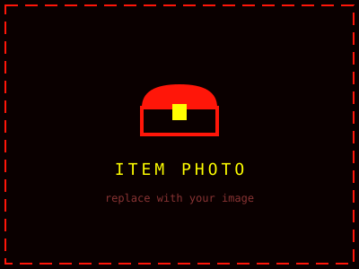

Hint
LOOK PAST THE WATER
Cache #002 — Island Signal
This one required a boat ride to place. The cache sits within sight of one of the most photographed views around, tucked where thousands of people walk past every week without a second glance. Hidden in plain sight, exactly the way I like it.
Bring a pen. Take the item, leave something of equal or greater mystery, and log your find in the notebook inside.
The Item

WHAT YOU'RE LOOKING FOR
Hint
WHERE THE PATH SPLITS
Cache #001 — The First Drop
Somewhere among the trees west of the city, a small container waited beneath a landmark that has watched over this spot for more than a century. I hid it here because this is where the whole idea started — the first place I ever went looking for something that wasn't on any map.
Claimed on 2026.06.28 — congratulations to the finder! The logbook stays behind for the next visitor to sign.
The Item
FOUND & CLAIMED